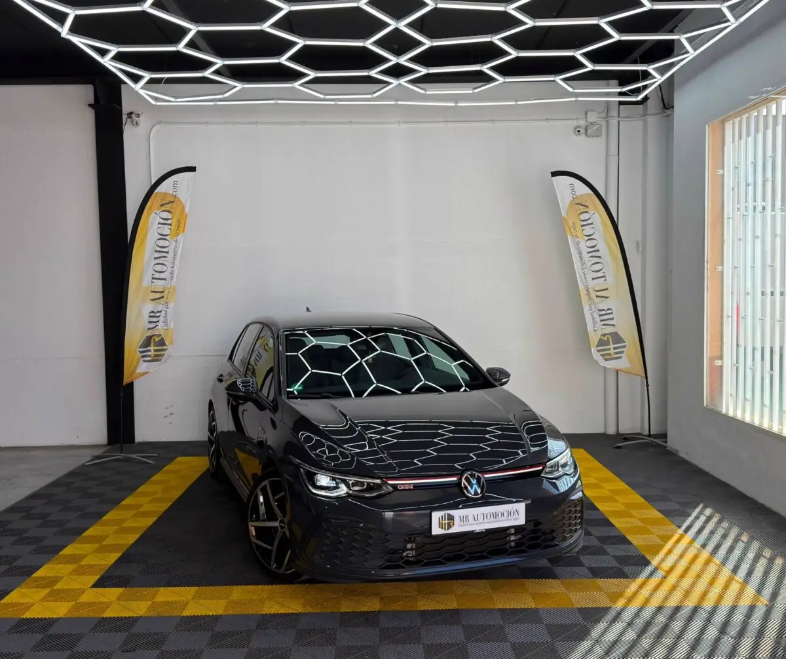

1 / 16Ponemos a la venta este espectacular Volkswagen Golf Mk8 GTI , matriculado en abril de 2022 . Una unidad impecable que registra tan solo 60.000 km reales y certificados, lista para ofrecer a su próximo propietario la combinación perfecta entre polivalencia diaria y unas prestaciones que quitan el aliento.
Bajo el capó late la última evolución del laureado motor de gasolina 2.0 TSI, que desarrolla una potencia de 245 CV (180 kW) y un contundente par motor. Está asociado a la rapidísima transmisión automática de doble embrague DSG de 7 velocidades con levas en el volante, un conjunto que catapulta al GTI con una suavidad y una efectividad pasmosas en cualquier tipo de trazado.
Diseño Exterior Color Gris Delfín Metalizado: Una tonalidad moderna y sumamente atractiva que resalta las líneas musculosas de la carrocería y contrasta a la perfección con los detalles en rojo GTI. Llantas nuevas: Diseño Audi Sport 5-V-Spoke Polygon de 19" Iluminación IQ.LIGHT Matrix LED: Espectaculares faros matriciales delanteros con asistente de luces de carretera dinámico, intermitentes dinámicos, la mítica línea roja transversal y la parrilla delantera iluminada en LED.
Zaga Deportiva: Paragolpes específicos GTI con calandra en nido de abeja, difusor trasero deportivo negro y dos salidas de escape cromadas independientes (una a cada lado) que regalan un sonido sugerente y con personalidad. Cristales traseros oscurecidos de fábrica, sensores de luz y lluvia automáticos, y retrovisores exteriores térmicos con ajuste y plegado eléctrico.
Interior tecnológico Digital Cockpit Pro: Cuadro de instrumentos 100% digital configurable con pantallas de visualización exclusivas GTI (cuentarrevoluciones central, medidor de fuerzas G y presión del turbo). Sistema de Infoentretenimiento Avanzado: Gran pantalla táctil central con navegación integrada, controles hápticos y conectividad inalámbrica total mediante Apple CarPlay y Android Auto.
Asientos Deportivos GTI: Espectaculares asientos delanteros tipo semi-baquet con reposacabezas integrados, acabados en la icónica tapicería de cuadros Scale Paper con costuras de contraste rojas que rinden homenaje a la historia del modelo. Volante deportivo multifunción en cuero perforado con moldura GTI y superficies táctiles, botón de arranque sin llave ( Keyless-Go ), climatizador automático de tres zonas con regulación digital independiente y sistema de iluminación ambiental LED personalizable.
Seguridad y Asistencias a la Conducción Asistente de Mantenimiento de Carril (Lane Assist): Corrección activa de la trayectoria. Frenada de Emergencia Autónoma (Front Assist): Con detección de peatones y ciclistas. Sensores de Aparcamiento Completos: Sensores delanteros y traseros con ayuda visual en pantalla para facilitar las maniobras.
Control de crucero adaptativo con limitador de velocidad, detector de fatiga del conductor y control de estabilidad (ESC) con diferencial electrónico XDS. Tu Compra Segura con MRautomoción: ✅ Mantenimiento al Día: Vehículo rigurosamente revisado en nuestras instalaciones. ✅ Kilometraje Certificado: 60.000 km reales. ✅ Garantía Completa de 1 Año (12 meses). ✅ Transferencia Incluida: Precio definitivo llave en mano, sin sorpresas ni costes ocultos. 💶 Precio Especial: 29.000 € ✅ Consúltanos nuestras ventajosas opciones de financiación a tu medida con excelentes condiciones.
| Marca | Volkswagen |
|---|---|
| Modelo | Volkswagen Golf GTI 8 245VC |
| Año | Abr 2022 |
| Kilómetros | 60.000 km |
| Combustible | Gasolina |
| Cambio | Semi-Automático |
| Potencia | 245 CV |
| Garantía | 1 Año |
| IVA | NO DEDUCIBLE |
Quizá también te encaje